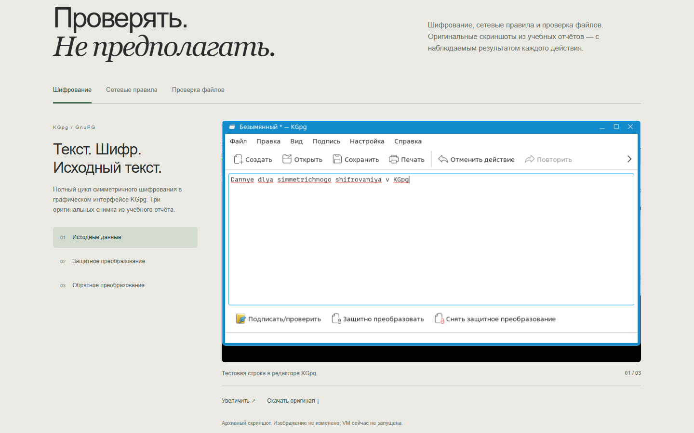

Зашифровать → расшифровать.
Три оригинальных кадра показывают тестовую строку, блок PGP MESSAGE и возвращение исходного текста.
TECHNICAL EDITORIAL ARCHIVE
Учебная практика по Linux и информационной безопасности. В десяти учебных отчётах собраны задания по защите данных, сетевой фильтрации и анализу угроз.
Каждая работа показывает поставленную задачу, выполненные действия и полученный результат.
Практические задачи демонстрируют системную работу с Linux и проверку настроек.
Снимок KGpg показывает ключевой этап работы с зашифрованным сообщением.

Три оригинальных кадра показывают тестовую строку, блок PGP MESSAGE и возвращение исходного текста.
Перед блокировкой Apache отвечал HTTP 500: сервис был доступен, но это не доказывает корректность приложения. После правила запрос завершался тайм-аутом.
Проверка выполнялась на учебном EICAR в виртуальной машине.
Три задания охватывают шифрование, сетевую фильтрацию и проверку сигнатур. Для каждого показаны действие и наблюдаемый результат.